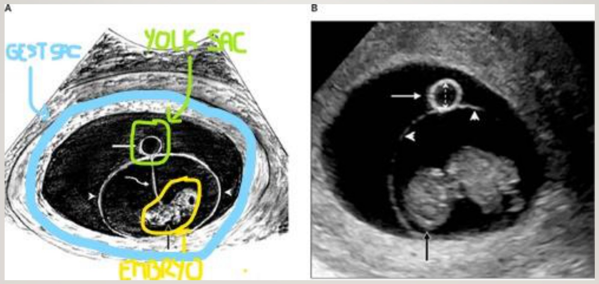
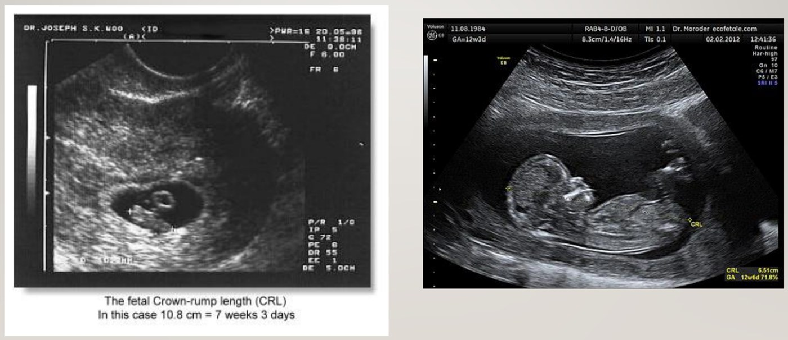
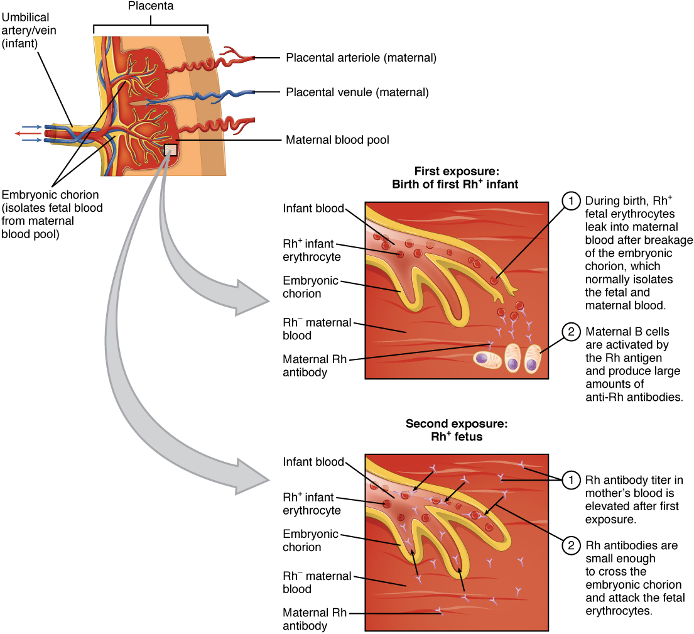
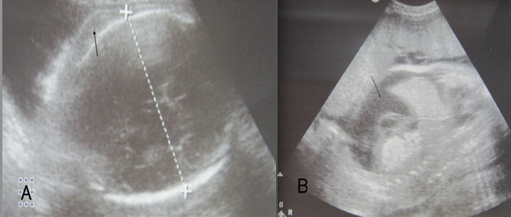
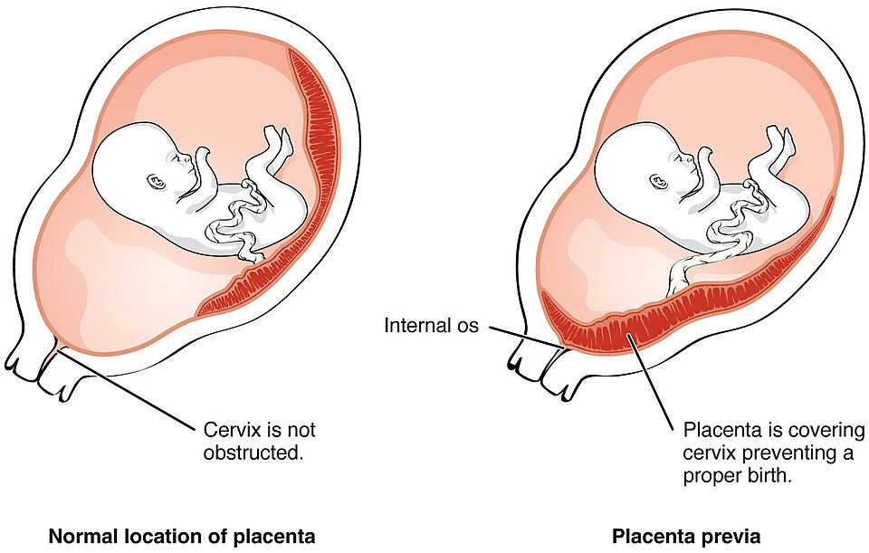
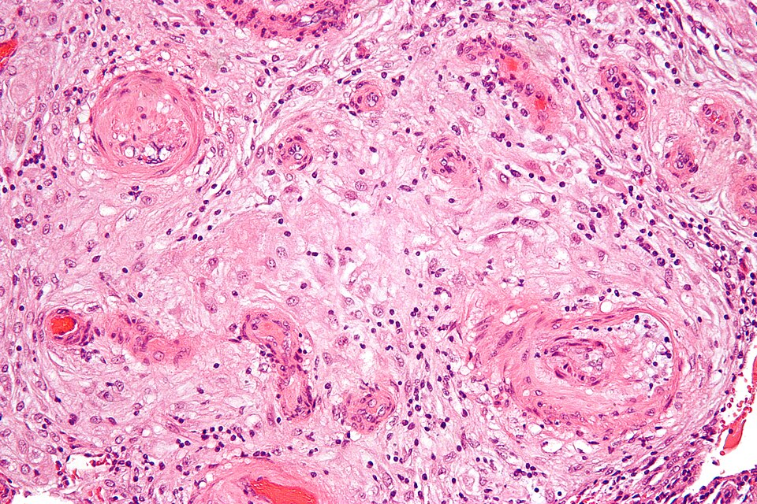
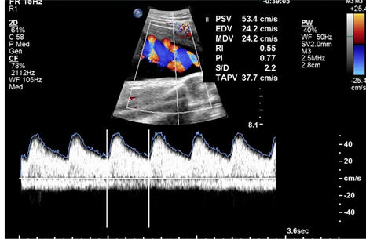
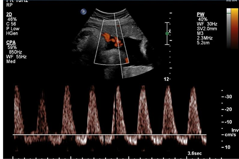
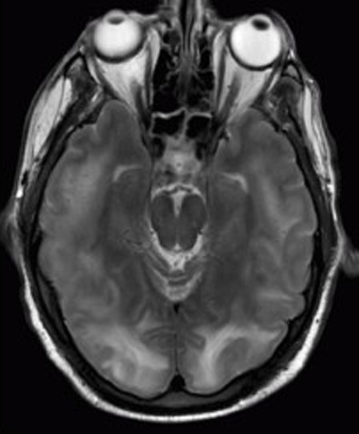
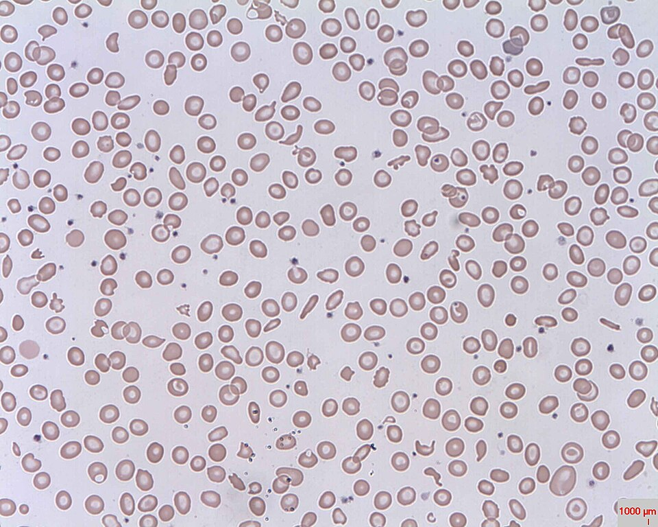

Pregnancy Care
From the positive test to the delivery plan: confirming and dating a pregnancy, GTPAL and the booking bloods, nutrition, vaccines and Rh, the 18–22 week anatomy scan, hypertension in pregnancy, and the whole 40 weeks on one ruler with who provides the care. Warm up with 18 questions to find your weak spots, work through the five topics (the step bar marks the ones you missed), then finish with a 36-question final. Every answer links back to the lecture it came from.
Warm-up quiz
Cold, no notes. It's a diagnostic, not a grade: your score per topic lands on the step bar and tells you where to spend the day.
First Trimester: Diagnosis, Dating & GTPAL
Confirm it, date it, count it, and order the baseline bloods. Every later decision in the pregnancy is measured against these.
- Serum β-hCG: < 5 negative, > 25 positive. A sac is usually visible at about 1500 transvaginally, about 5000 transabdominally. It's intrauterine only when you see a gestational sac and a yolk sac.
- Date by the first ultrasound, not the LMP. Crown–rump length up to 14 weeks; any scan before 23 weeks beats the LMP; an IVF transfer date beats everything. Once set, the due date never moves: a later mismatch is a growth question.
- GTPAL counts pregnancies, not babies (twins = one), except L, which counts living children. T ≥ 37 weeks, P 20 to 36+6, A < 20.
- Fundus at the symphysis at 12 weeks, the umbilicus at 20; from 20 weeks, fundal height in cm ≈ weeks.
- Everyone: CBC, group & screen, rubella, hepatitis B, HIV, syphilis, GC/chlamydia, urine culture, and an offer of eFTS at 11–14 weeks. HSV is not routine; TSH only with known thyroid disease.
The first visit in five steps
Urine hCG, then serum hCG when you need certainty, then ultrasound for a viable intrauterine pregnancy.
First-trimester crown–rump length. Naegele's rule is only a rough check.
Preterm births and losses are what make a pregnancy higher-risk, and plain G/P hides them.
Same list for everyone, plus TSH, hepatitis C/HSV or a hemoglobinopathy screen when indicated.
Nuchal translucency + four serum markers, offered whatever her age or risk.
Confirming it
| Serum β-hCG (IU/L) | Means |
|---|---|
| < 5 | Negative |
| 5–25 | Grey zone: very early pregnancy, or lab error |
| > 25 | Pregnant |
| ~1500 | Sac usually seen on transvaginal US |
| ~5000 | Sac usually seen on transabdominal US (lower if thin, higher with a high BMI) |

Dating
| Method | Rank |
|---|---|
| IVF embryo transfer date | Beats everything, including ultrasound |
| First-trimester US: CRL (to 14 weeks; first scan with CRL ≥ 10 mm, ~7 weeks) | The standard. Any US before 23 weeks is used instead of the LMP |
| Second-trimester US: HC, BPD, AC, femur length | Only if there was no earlier scan (CRL unreliable after 14 weeks) |
| Naegele's rule: LNMP + 7 days − 3 months + 1 year | Rough estimate only |

Naegele's, worked: LNMP 10 January 2026 → 17 January → 17 October → EDB 17 October 2026. Pregnancy = 280 days = 40 weeks from the LNMP. Dating early matters because the big calls hang on it: counselling at the peri-viable 23–24 weeks and post-dates at 41–42 weeks.
GTPAL
| Letter | Counts |
|---|---|
| Gravida | All pregnancies, including this one |
| Term | Delivered at ≥ 37 weeks (twins = one T; a stillbirth still counts) |
| Preterm | Delivered at 20 to 36+6 weeks |
| Abortions | Ended before 20 weeks: miscarriage, induced abortion, ectopic |
| Living | Children alive now that she gave birth to (not adopted) |
| History (all pregnant now) | GTPAL |
|---|---|
| 38-week live birth, 32-week stillbirth | G3 T1 P1 A0 L1 |
| 10-week miscarriage, 36-week live twins, 41-week singleton | G4 T1 P1 A1 L3 |
| Three births at 39–40 weeks, one neonatal death at 10 days | G4 T3 P0 A0 L2 |
The first 12 weeks
| Symptom | Why |
|---|---|
| Amenorrhea (or spotting) | hCG keeps the corpus luteum going, so menses never come |
| Nausea, vomiting, food aversions | Rapidly rising hCG |
| Urinary frequency | ↑ blood volume and GFR, uterine pressure, smooth-muscle relaxation |
| Breast tenderness, fatigue, mood swings | Hormones; metabolic demand |
| Weeks | Fundus |
|---|---|
| Not pregnant | In the pelvis (her fist) |
| 12 | At the pubic symphysis (a small grapefruit) |
| 20 | At the umbilicus; then SFH in cm ≈ weeks |
| 28 to term | Upper abdomen: breathless (diaphragm up), oxygenation normal |
The booking bloods
| Every pregnancy | Why |
|---|---|
| CBC | Hb, MCV (low → hemoglobinopathy screen), platelets |
| Group & screen | Blood type, Rh, red-cell antibodies |
| Rubella | Non-immune → vaccinate postpartum (live vaccine) |
| Hep B, HIV, syphilis | Treatments reduce harm to her and the baby |
| GC / chlamydia | Swab or urine |
| Urine culture | Asymptomatic bacteriuria (poorer bladder emptying) |
| Selected women only | When |
|---|---|
| TSH | Known hypo- or hyperthyroidism |
| Hepatitis C, HSV, other STIs | High-risk or exposed. HSV antibodies don't predict transmission: look for a lesion near delivery |
| Hemoglobinopathy screen | Mediterranean, Southeast Asian, African ancestry, or low MCV/Hb |
| NIPT or CVS | Known carrier of a testable condition |
Nutrition, Vaccines & Rh
What to add, what to give, what to hold back, and what to do for a woman who is Rh-negative or already has an antibody.
- +350–450 kcal/day, healthy eating over weight targets, and a prenatal multivitamin for everyone. The two supplements most often needed: folic acid and iron.
- Every pregnancy: Tdap at 27–32 weeks (IgG crosses to protect the newborn from pertussis) and influenza at any gestation in flu season. Avoid the live ones: MMR, varicella, BCG.
- Rh-negative: Rh immunoglobulin at 28–30 weeks and postpartum if the baby is Rh-positive, plus after bleeding, a procedure or trauma from 8–10 weeks. One dose lasts about 12 weeks.
- Already has an antibody: titre, find the cause, test the partner. Below 1:8, repeat monthly. At ≥ 1:8 (critical), watch the fetus with MCA peak systolic velocity.
- Sensitized and stable: deliver at 37–38 weeks. Severe anemia early → intrauterine transfusion; after 34–35 weeks → consider delivery.
Nutrition
| Daily allowance | Not pregnant | Pregnant | Breastfeeding |
|---|---|---|---|
| Folate (mcg) | 400 | 600 | 500 |
| Iron (mg) | 18 | 27 | 9 |
| Calcium (mg) | 1000 | 1000 | 1000 |
| Vitamin D (mcg) | 15 (600 IU) throughout (the deck's 5 mcg is the pre-2010 value) | ||
| Supplement | Who |
|---|---|
| Prenatal multivitamin | Everyone |
| Folic acid, iron | Most commonly needed: the fetus needs a lot; iron also feeds her expanding red-cell mass and uterine muscle |
| Iodine | Where local diets are deficient |
| Zinc, calcium, vitamins C and D | Malabsorption, e.g. after gastric bypass |
Vaccines
| Category | Vaccines | What to do |
|---|---|---|
| Every pregnancy | Tdap | 27–32 weeks: maternal IgG crosses the placenta, passive immunity to pertussis for the newborn |
| Every pregnancy | Influenza | Any gestation (or postpartum) in flu season |
| If she'd need it anyway | Hepatitis A and B, Hib, meningococcus, rabies (inactivated) | Give: pregnancy is not a reason to withhold |
| Avoid | Live attenuated: MMR, varicella, BCG | Defer to postpartum. Risk is theoretical, so an inadvertent dose is not a disaster |
Rh immunoglobulin
| Rh-negative, no antibody: give RhIG | Why then |
|---|---|
| Routinely at 28–30 weeks | Covers the rest of the pregnancy |
| Postpartum, if the baby is Rh-positive | Delivery is the biggest fetomaternal bleed |
| After 8–10 weeks: bleeding, CVS/amniocentesis, trauma | Fetal cells can leak into her blood |
| Every 12 weeks if still undelivered | One dose lasts about 12 weeks |

| What sensitizes her |
|---|
| Fetal cells from a previous pregnancy or an invasive procedure |
| A blood transfusion |
| Shared needles in IV drug use |
| First response | Later pregnancy | |
|---|---|---|
| Antibody | Mostly IgM | IgG |
| Crosses the placenta? | Poorly (too big) | Easily, from conception |
| Result | First pregnancy usually spared | Has the whole pregnancy to act |
When she already has an antibody

The Second-Trimester Anatomy Scan
One scan at 18–22 weeks, offered to everyone, with five jobs.
- The indication is pregnancy. Every pregnant person is offered an anatomy scan at 18–22 weeks, low risk or not.
- Five jobs: dating (if not done) and growth · number of fetuses (and chorionicity) · placental location · the anatomy screen · soft markers.
- Placenta: which wall, and how close to the cervix. That's how a placenta previa is found, and it's the finding that matters most for later bleeding.
- Soft markers are not birth defects. They raise the risk of trisomy 21 or 18 above her prior risk, and prompt an offer of further screening or testing.
- A biophysical profile is not part of this scan: that's a third-trimester well-being test.
One scan, five jobs
| Job | What it means |
|---|---|
| 1. Dating and growth | Dates the pregnancy only if there was no first-trimester scan; otherwise it's the growth baseline |
| 2. Number of fetuses | A full survey for each; chorionicity if not known |
| 3. Placental location | Anterior or posterior, and its distance from the cervix |
| 4. Anatomy screen | Rules out major congenital anomalies (birth defects: 2–3% of pregnancies) |
| 5. Soft markers | Findings that raise the risk of aneuploidy |
Dating, growth and multiples
 Biometry: head circumference and BPD (left), femur length (right), plus abdominal circumference. Plotted against weekly charts to see if the fetus is on track. After 14 weeks this composite replaces CRL, with a wider error. Slide from the lecture.
Biometry: head circumference and BPD (left), femur length (right), plus abdominal circumference. Plotted against weekly charts to see if the fetus is on track. After 14 weeks this composite replaces CRL, with a wider error. Slide from the lecture.
 Two heads, two anatomy surveys. Chorionicity can be assigned now, but it's easier and more accurate in the first trimester. Slide from the lecture.
Two heads, two anatomy surveys. Chorionicity can be assigned now, but it's easier and more accurate in the first trimester. Slide from the lecture.
The placenta
 Which wall? Anterior here. The colour is Doppler flow in the cord; the scan also checks where the cord inserts. Slide from the lecture.
Which wall? Anterior here. The colour is Doppler flow in the cord; the scan also checks where the cord inserts. Slide from the lecture.
 How close to the cervix? A transvaginal view, added when the placenta looks low: placenta over the internal os = previa. Slide from the lecture.
How close to the cervix? A transvaginal view, added when the placenta looks low: placenta over the internal os = previa. Slide from the lecture.

Normal placenta (left) vs placenta previa covering the internal os (right). OpenStax College, CC BY 3.0, via Commons.Screening the anatomy
 Three standard views: the cerebellar view, the facial profile (nasal bone, nose, chin) and the distal spine (to rule out spina bifida). Slide from the lecture.
Three standard views: the cerebellar view, the facial profile (nasal bone, nose, chin) and the distal spine (to rule out spina bifida). Slide from the lecture.
 The four-chamber view, plus cine loops sweeping up from it, because the heart moves. Slide from the lecture.
The four-chamber view, plus cine loops sweeping up from it, because the heart moves. Slide from the lecture.
| Why find an anomaly before birth (all of these) |
|---|
| Counsel the parents about what to expect |
| Direct further investigation: focused ultrasound, other imaging, genetic testing |
| Plan where and how to deliver: the level of care the baby will need |
| Allow the option of termination for severe or life-limiting anomalies |
Soft markers

| Soft marker | Raises the risk of |
|---|---|
| Thickened nuchal fold (back of the neck) | Trisomy 21 |
| Echogenic intracardiac focus (as bright as bone) | Trisomy 21, a small increase |
| Choroid plexus cyst (where CSF is made) | Trisomy 18, a slight increase |
Hypertension in Pregnancy
Two numbers, one dividing line at 20 weeks, and a disease that only delivery cures.
- Hypertension: ≥ 140 or ≥ 90, two readings 15 minutes apart. Severe: ≥ 160 or ≥ 110: treat urgently to below 160/110, because the fear is stroke.
- 20 weeks is the line. Before it = chronic; after it with normal earlier BPs = gestational. BP normally falls from 8–12 weeks and is back by 20–24, so early high BP was there before pregnancy.
- Preeclampsia = new hypertension + proteinuria (or organ or placental dysfunction). It's placental: delivery is the only cure. Eclampsia = seizures. HELLP can come with a normal BP.
- Oral: labetalol, nifedipine XL, methyldopa. Severe: IV labetalol, short-acting nifedipine, IV hydralazine. Seizure prophylaxis: magnesium sulphate, continued after delivery.
- ACE inhibitors and ARBs are out (fetal kidneys): switch before conception. Diuretics are a poor choice (they fight the physiology), not a dangerous one.
The numbers
| Systolic | Diastolic | ||
|---|---|---|---|
| Hypertension | ≥ 140 | or | ≥ 90 |
| Severe | ≥ 160 | or | ≥ 110 |
| Two readings ≥ 15 min apart, seated, cuff at heart level. Very high and symptomatic: don't wait the 15 minutes. | |||
Classify it
| Category | Defined by | Remember |
|---|---|---|
| Chronic | Before pregnancy or < 20 weeks | More placental dysfunction; the earlier the onset, the higher the preeclampsia risk (worse with diabetes or kidney disease) |
| Gestational | ≥ 20 weeks, normal BPs before, no adverse conditions | Isolated BP problem, classically 35–38 weeks |
| Preeclampsia | Hypertension + proteinuria (± adverse conditions) | Classically late, first pregnancies, but any parity. De novo or superimposed |
| Eclampsia | Seizures | Prodrome: worsening proteinuria, headache, clonus, photosensitivity |
| HELLP | Hemolysis, Elevated Liver enzymes, Low Platelets | Hypertension not required |
Why 20 weeks
| Normal pregnancy | BP |
|---|---|
| 8–12 weeks: resistance falls faster than volume fills it | Falls |
| 20–24 weeks (28 at the latest) | Back to baseline |
| High before 20 weeks | Despite the dip → chronic |
| New after 20 weeks | Gestational (or preeclampsia) |
| Preeclampsia risk | Effect |
|---|---|
| Molar pregnancy (very high hCG, abnormal placenta) | ↑, and early-onset |
| Chronic hypertension, diabetes, kidney disease | ↑ |
| Smoking | Slightly ↓ (but ↑ growth restriction, placental insufficiency) |
| Hypothyroidism | No effect on BP (hyperthyroidism can raise it) |

Complications: watch, or deliver?
| System | Adverse condition: watch closely | Severe complication: usually deliver |
|---|---|---|
| CNS | Headache, visual disturbance | Eclampsia, PRES, TIA/stroke, GCS < 13, retinal detachment, cortical blindness |
| Heart, lungs | Chest pain, dyspnea, sat < 97% | Uncontrolled severe HTN, MI, sat < 90%, pulmonary edema |
| Blood | ↑ WBC, ↑ INR/PTT, ↓ platelets | Platelets < 50, transfusion needed |
| Kidney | ↑ creatinine, ↑ uric acid | AKI, dialysis |
| Liver | Nausea, vomiting, RUQ pain, ↑ LFTs, low albumin | INR > 2, hepatic hematoma or rupture |
| Feto-placental | IUGR, oligohydramnios, absent/reversed end-diastolic flow | Abruption with compromise, reversed ductus venosus flow, fetal death |

Umbilical artery, normal: forward flow right through diastole (trace never touches the baseline). Indiramani et al., CC BY-SA 4.0, via Commons (cropped).
Reversed end-diastolic flow in severe preeclampsia: between beats the trace dips below the baseline. A feto-placental adverse condition. Indiramani et al., CC BY-SA 4.0, via Commons (cropped).
PRES, a severe CNS complication: reversible edema at the back of the brain (bright occipital areas, both sides), driven by severe hypertension. Rashmi Chawla, Daniel Smith and Paul E Marik, CC BY 3.0, via Commons.
The H in HELLP: hemolysis leaves fragmented red cells (schistocytes) on the blood film. Osaro Erhabor, CC0, via Commons.Management
| Chronic / gestational | Preeclampsia, eclampsia, HELLP | |
|---|---|---|
| The BP is… | The disease | A symptom |
| Treating it | Protects the placenta, prevents progression | Reduces harm, doesn't treat the disease |
| The cure | — | Delivery (usually a transfer of care to obstetrics) |
| Setting | Drugs |
|---|---|
| Oral, mild and stable | Labetalol (α/β-blocker), nifedipine XL, methyldopa (central α2-agonist) |
| Severe | IV labetalol, short-acting nifedipine, IV hydralazine, every 30 min to target |
| Seizure prophylaxis | Magnesium sulphate: 4 g IV load, then 1–2 g/h until delivery and 12–48 h after |
| Avoid | ACE inhibitors / ARBs (oligohydramnios, fetal renal failure); diuretics (ineffective) |
Severe BP or severe preeclampsia
IV labetalol, short-acting nifedipine or IV hydralazine to below 160/110. Very high with symptoms: don't wait 15 minutes to confirm.
Stroke is the maternal fear.
Adverse conditions mean watch closely; severe complications usually mean deliver.
It raises the seizure threshold.
A transient postpartum worsening can occur, so magnesium runs on 12–48 h; preeclampsia can even appear after delivery.
The 40-Week Map & Who Provides Care
Every test, vaccine and check on one ruler, and the three providers who can carry a low-risk pregnancy.
- Weeks count from the LMP. EDB = 280 days = 40+0. First trimester to 13+6, second 14+0 to 27+6, third from 28. Term from 37; peri-viable 23–24; post-dates 41–42.
- First trimester: hCG, dating scan (CRL), booking bloods, NT + eFTS at 11–13+6, folic acid from 3 months before conception.
- Second: anatomy scan 18–22, decisions about anomalies before 24, diabetes screen 24–28, and new BP after 20 = gestational.
- Third: Tdap 27–32, Rh immunoglobulin 28–30 (+ postpartum), GBS swab 35–37.
- Providers: family medicine OB, midwife or obstetrician can all carry a low-risk pregnancy. The big difference is after birth: family doctors and midwives keep parent and baby to 6 weeks; the obstetrician hands the baby off at its first breath.
The whole pregnancy on one ruler
What happens when
| When (weeks) | What | Key point |
|---|---|---|
| 3 months before → 13 | Folic acid | Reduces neural tube defects |
| ~4 (missed period) | β-hCG | > 25 positive; sac usually seen transvaginally by ~1500 |
| 5–10 | Organogenesis | Peak teratogen risk: major structural defects. Before it: all-or-nothing |
| First visit | Booking bloods, GTPAL | CBC, group & screen, rubella, hep B, HIV, syphilis, GC/CT, urine culture |
| 7–12 (CRL valid to 14) | Dating scan | Sets the EDB; it never moves after that |
| 11–13+6 | NT + eFTS | Offered to everyone |
| 12 / 20 | Fundus | Symphysis / umbilicus; then cm ≈ weeks |
| 18–22 | Anatomy scan | Growth, number, placenta, anatomy, soft markers |
| From 20 | BP every visit | New ≥ 140/90 = gestational; + proteinuria = preeclampsia |
| Before 24 | Anomaly decisions | Termination for a fetal anomaly must happen before 24 weeks, so test turnaround matters |
| 24–28 | Diabetes screen (50 g, non-fasting) | < 7.8 mmol/L: done · > 11.0: diabetes · in between: fasting 75 g test (one high value diagnoses) |
| 27–32 | Tdap | Every pregnancy |
| 28–30 | Rh immunoglobulin (Rh−) | + postpartum if the baby is Rh-positive |
| 35–37 | GBS swab | Positive → antibiotics in labour |
| 37–42 | Term | Stable sensitized (antibody) pregnancy: deliver at 37–38 |
| 40+0 / 41–42 | EDB / post-dates | Why accurate early dating matters |
| Any time | Flu vaccine (in season) · RhIG after a bleed, procedure or trauma · no live vaccines | — |
Who provides the care
| Family medicine OB | Midwife | Obstetrician | |
|---|---|---|---|
| Training | Family medicine + 6–12 months obstetrics | 4-year direct-entry degree | 5-year OBGYN residency (MFM: + 2-year fellowship) |
| Cares for | Low-risk: own patients + referrals | Specialists in low-risk pregnancy and birth | Complicated pregnancies; consultant to the other two |
| Operative delivery | Many do vacuum; some rural ones do caesareans | No | All forms |
| The baby | From birth, for years | Parent and infant to 6 weeks | None: hands off at the first breath |
| Postpartum | Continues routine care | 3 visits in week 1; home visits offered | Often only the 6-week visit |
| Lactation | Supports it | Significant extra training | No lactation training |
| Visits | Standard | 30–90 min, clinic, home or hospital | Standard consultation |
| Consent model | Informed consent | Informed choice | Informed consent |
| Birth setting | Hospital | Home, birth centre, clinic or hospital: her choice | Hospital |
| Phase | Consult an obstetrician for… |
|---|---|
| Antepartum | Medically complex (diabetes, essential HTN, prior preeclampsia, high BMI, SLE) · fetal anomaly (MFM) · abnormal fetal surveillance (e.g. BPP) · planned caesarean |
| Intrapartum | Abnormal fetal surveillance · labour dystocia, failure to descend, malposition · operative delivery · preeclampsia or eclampsia |
| Postpartum | Significant PPH · 3rd- or 4th-degree tear · preeclampsia after delivery |
Informed choice means a midwife's client may choose outside the usual recommendation, and that's within the model. The family doctor's edge is continuity: depression, URTIs, rashes in mother and baby. And the module's closing line: asking for help is not a failure.
Final quiz
36 new questions, mostly clinical vignettes like the progress test. Your results compare each topic with your warm-up.